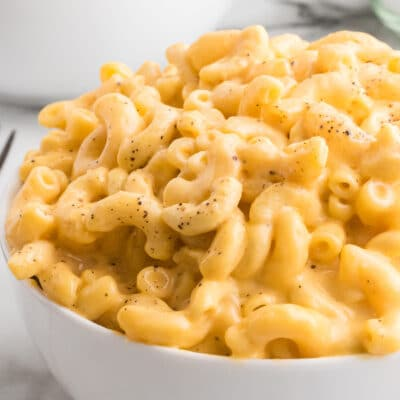

Mac and Cheese Recipe

Description
This recipe is one that has been passed down in my family for 4 generations. It was made by my great-grandmother on my mother's mother's side.
It utilizes 2 cheeses to create some of the great gooyness ever made!
Ingredents
- 24 oz. of macaroni noodles
- 33.1 oz. of cream of mushroom soup
- 33.1 oz. of whole milk
- 2 tbsp of butter
- 16 oz. of cheddar cheese
- 16 oz. of mozzarella cheese
- 2 generous seasonings of salt
- 2 generous seasonings of pepper
Steps
- first layer of macaroni
- first layer of cheese mix
- season wih salt and pepper
- second layer of macaroni
- second layer of cheese mix
- season with salt and pepper
- season with paprika
- 2 tbsp of chopped butter
- preheat oven to 350 degrees
- cook for 45 minutes